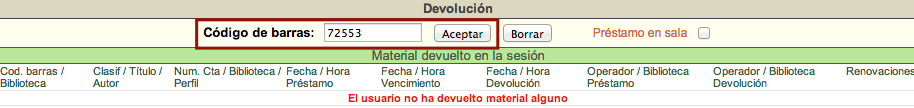

Estas acciones consisten en registrar la entrega en la biblioteca de un material prestado. Cuando se registra la devolución de dicho material antes de su fecha y hora de vencimiento no se genera ninguna sanción (monetaria o administrativa) al usuario.
Pantalla
La pantalla de Devolución se compone de tres secciones:
-
Información sobre el usuario, que muestra lo siguiente:
- Número de cuenta y nombre completo del usuario.
- Notas informativas asociadas al usuario.
-
Campo de código de barras y préstamo en sala, que muestra lo siguiente:
- Campo de texto para escribir el código de barras.
- Cuadro de selección para préstamo en sala.
-
Lista de material devuelto en la sesión activa, que muestra lo siguiente:
- Código de barras y biblioteca del ejemplar.
- Clasificación, título y autor.
- Número de cuenta del usuario, biblioteca del usuario y perfil.
- Fecha y hora de préstamo.
- Fecha y hora de vencimiento.
- Fecha y hora de devolución.
- Número de cuenta y biblioteca del operador de Circulación responsable del préstamo.
- Número de cuenta y biblioteca del operador de Circulación responsable de la devolución.
- Renovaciones efectuadas.
-
Historial de devoluciones de un material: que puede ser consultado introduciendo el código de barras del ítem.
{kind=link}
{kind=link}
Procedimiento de devolución
- Hacer clic sobre la opción Devolución de la barra de herramientas del módulo.
- Escribir el número de código de barras del material en el campo de texto de la sección destinada para ello y hacer clic en el botón Aceptar.

- Al llevar a cabo la acción anterior, se despliegan los datos del usuario que tenía vinculado el material en préstamo y la información del registro de devolución.

Devolución de un préstamo vencido
Cuando se devuelve un material cuyo período de préstamo ha expirado, el sistema avisa de tal situación y, además, ejecuta la multa monetaria o suspensión administrativa correspondiente dependiendo de las políticas de circulación aplicadas por la institución.
El posible mensaje de alerta es el siguiente:
Por favor, tenga en cuenta que el usuario ha sido multado por retraso en la devolución del material.
Devolución de un material apartado / reservado
Un usuario puede solicitar el apartado / reserva de un material que se encuentre Prestado. Esto significa que al registrar la devolución del material, este queda reservado para el usuario solicitante siguiente evitando que otros usuarios lo puedan pedir en préstamo, durante el tiempo que la institución haya definido para estos casos. Además, el sistema avisa de la mencionada circunstancia.
El posible mensaje de alerta es el siguiente:
Por favor, tenga en cuenta que el material fue apartado por el usuario: 1234